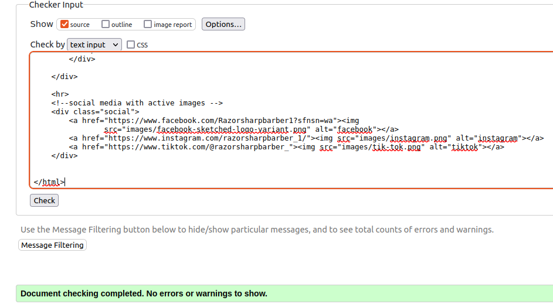

Work Experience:
Starting day 22/01/2024,
End day: 2/2/2024
RED3
22-01-2024
10 AM, we start a meeting for work experience. It was explaining about brief,
and when we move in our groups (Barber 3). We introduce each other also we
meet group tutor. After introducing it we got a smaller group. What we do for
a brief. 12 cloak we have another meeting and he talked
about waterfall, agile, project management.
After lunch we discus and looked into templates and other barbers web sites
just to get more ideas for how our web page looks (Razor Sharp). At 16:00 we end the day.
23-01-2024
In the morning at 10 AM, we talk about what everyone has done,
or what we have done. When we move in our small groups and start
doing the work until lunch. After lunch we start a Project management
fundamentals course, and we do it for the rest of the evening. At 16:00 we end the day.
24-01-2024
10AM in main meeting we have meeting for marketing. After the meeting
we move into our group and talk with the tutor. Those who did not
finish the Project management fundamentals course do that for the
rest of the evening and others who have done start doing our parts for a brief. At 16:00 we end the day.
25-01-2024
In the morning 10AM meeting with the tutor, we show what we have done yesterday, and he
tells us what we change for our work what we have done. I get stuck with a sticky
navigation (navigation follow web page when you are scrolling down the page, like a sticky navbar.) search
more about that in google how to do. After lunch we met with the tutor, and he sent
a web link to another course (Generative AI) and that was for the rest of the evening. At 16:00 we end the
day.
26-01-2024
10AM It was the same morning we met in a group and discus more about our project. After discus with
the tutor, we move into our smaller groups where we work. After lunch in the main meeting room,
the lady talked about cybersecurity for an hour. We move back into our group and do Generative
AI course for the rest of the evening and some people stay working on a project. At 16:00 we end the day.
29-01-2024
10 AM, we have meeting into our group like every morning. We discus with the tutor about presentation how
it looks and how many slides will be. After we stay in our Barber group and do the slides but not everyone.
We just send everything to one person who works with slides, and I stay working with web page. I want
to make images at 50% width, but I made a mistake somewhere in CSS, so it did not work for me to try to
find the mistake, but it took too long, and I decided to change the main web page. After lunch we meet
with the tutor, and everyone shows how everything looks. The tutor was happy with everyone's work,
also he was happy with a web page. At 16:00 we end the day.

30-01-2024
10AM morning meeting the tutor looks in our presentation and tells us what we can change and more
like Grant for a business. I stay working with a web page and try to fix other fellas code to be
responsive on the phone. Later, we got a message from the tutor, so he did not joy us after
He tells us to work on what we do and if someone is not finished Generative AI does that course.
After lunch I validate web page and fix all errors, warnings, and work with a responsive for that one
page the code was mess it was hard to find where he did a mistake. Well, it was not a big problem just
on the phone is not showing navigation bar. I did that for the rest of the evening. At 16:00 we end the day
31-01-2024
10AM, we practiced a presentation speech. I was lucky and I did not participate in the speech.
In that time, I add one container For an opening hour and tutor tells me if I can add one more page
for shopping, not much time left to make nice looking page, so I did the simple page. After lunch we
have another practice for presentation, and he tells us to make a few slight changes in slides for
the rest of the evening. At 16:00 we end the day.
01-02-2024
Today is the day when we have presentation. We got a message from tutor he said join in meeting 11 cloak
so we can relax a little longer because we did excellent job. When everyone joins the meeting,
we talk with the tutor in a funny way. We do anything until lunch just fun talk with everyone and tutor
as well. Before the lunch who speak in presentation take a quick practiced speech. After lunch everyone
meets in the main meeting where was other 3 barbers' teams. We listened to all 3 teams' presentation
and then we got ranked more like who wins between barbers. We were surprised our team took 1st place
it was so nice. After the results everyone moved into our group to meet tutors. We told good news to
the tutor we took 1st place between barbers he was so happy about it. Also, we talked about what we
experienced in the presentation and how it went. After talking the tutor said we can leave for a day
and not do anything because we have another presentation the next day in front of all the people who
participated in this work experience. At 16:00 we end the day.
02-02-2024
10AM in the main meeting room winners present their work in front of other people who participated
in this work experience. It was 3 other teams. Barber, Bakery, coffee shop, and book shop, After all
team representatives. Worker from fit talks about computer scientist, technology all study's if we
are going in fit. Later we move our room and wait our tutor in that time come Magdalena to
say goodbye and thanking for a hard work in the last 2 weeks. We wait for our tutor
and talk with him also he sends email to Magdalena thanking for her hard work to organize this
lifetime work experience also we thanked for our tutor for guiding and advising us for the last
2 weeks. In this work experience I learned how important teamwork is. Where I can improve more
also im coding not long it's not a year but still i need improve more if I want to get better. At 16:00 we
end the day.
Summary
During a two-week work experience. The experience began with introductions and group assignments,
and web design discussions (our part for a web page with web page team). We worked on a web page
project, coding, and navigation challenges. We received feedback from the tutor and prepared for
a final presentation. Our team got first place among the Barber teams, including teams from other
fields. Experience teamwork and coding improvement. The participant expressed gratitude to the
tutor and organizers for this valuable opportunity.